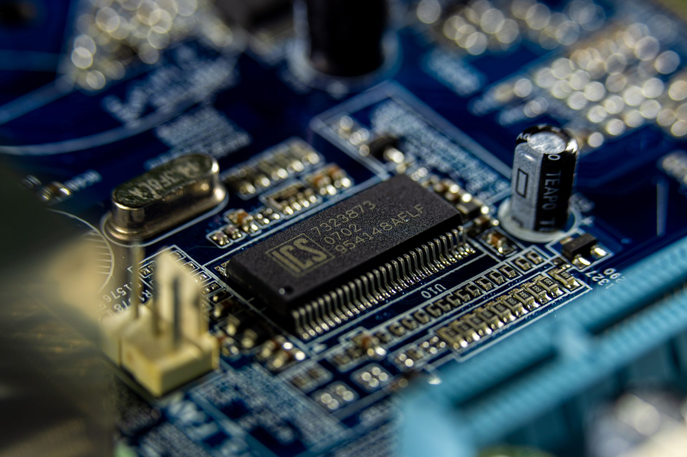

경북 구미, 대경권 반도체 소부장 혁신거점 구축 본격화

경상북도가 구미시를 핵심 거점으로 한 대경권 반도체 소재·부품·장비(소부장) 혁신거점 구축을 본격화한다고 밝혔다. 이는 국내 반도체 공급망 자립도를 높이고, 특정 국가 의존도를 줄이기 위한 정부·지자체 차원의 전략적 투자의 일환이다.
경북도는 구미를 중심으로 대구·경북 광역 소부장 클러스터를 조성하고, 소재·공정·패키징 전 분야에 걸친 기업 집적화를 추진할 계획이다. 초기 단계에서는 반도체용 화학소재, 세정제, 에천트(식각액) 등 공정소재 기업들의 입주를 집중 유치한다는 방침이다.
경북은 이미 구미 국가산업단지를 중심으로 반도체 관련 제조 인프라를 보유하고 있다. 삼성전자, SK하이닉스 등 대형 팹 기업들의 소재 공급 벨트로서 역할을 해온 구미는 기존 전자·디스플레이 산업 기반을 반도체 소재로 전환하는 데 유리한 조건을 갖추고 있다는 평가다.
경북도 관계자는 '반도체 공급망 안보는 곧 국가 안보와 직결된다'며 '구미를 중심으로 소부장 기업들이 집적해 연구개발부터 양산까지 원스톱으로 이뤄지는 생태계를 만들겠다'고 강조했다. 이를 위해 올해 안에 혁신거점 지정 절차를 완료하고 내년부터 인프라 구축에 착수한다는 계획이다.
이번 혁신거점에는 소재 기업뿐 아니라 장비 기업, 시험·인증 기관, 대학 연구소 등이 함께 입주하는 복합형 클러스터 모델이 적용된다. 특히 지역 내 금오공과대학교, 경북대학교 등과의 산학협력을 통해 소부장 전문 인력 양성 프로그램도 병행 운영할 예정이다.
대경권 혁신거점은 기존 용인·수원 중심의 수도권 반도체 클러스터와 차별화된 비수도권 거점으로 자리매김할 전망이다. 정부가 비수도권 반도체 인프라 투자에 세제 혜택과 보조금을 강화하는 방향으로 정책을 추진 중인 것도 경북 프로젝트에 긍정적인 요소다.
글로벌 공급망 재편 흐름도 경북 소부장 거점 조성에 유리하게 작용하고 있다. 미국, 유럽, 일본 등 주요국이 반도체 공급망 자국화를 추진하면서 한국 내 소부장 생태계 다변화 필요성이 부각되고 있으며, 비수도권 클러스터는 생산비용 절감 측면에서도 경쟁력을 가질 수 있다.
경북도는 혁신거점에 5년간 총 2,000억 원 이상의 국비·지방비 매칭 투자를 계획하고 있다. 소재·부품 기업들이 기술 개발에 집중할 수 있도록 입주 기업에 대한 임대료 감면, R&D 지원금, 장비 공동 활용 인프라 제공 등 패키지 지원책도 마련됐다.
구미 혁신거점의 성공 여부는 우수 소재 기업 유치에 달려 있다는 분석이다. 현재 수도권과 충청권에 집중된 주요 반도체 소재 기업들이 비수도권 거점 입주를 결정하려면, 물류·교통 인프라 확충과 연구 인력 수급 해결이 선행돼야 한다는 과제가 남아있다.
전문가들은 대경권 소부장 혁신거점이 단순한 공장 이전이 아닌 '기술 혁신 허브'로 기능해야 한다고 강조한다. 소재 기업이 장비 기업, 팹과 긴밀히 협력하는 수직적 밸류체인을 구축할 수 있어야 글로벌 경쟁력 확보가 가능하다는 것이다.
향후 경북 구미 소부장 혁신거점이 완성되면, 대경권은 반도체 소재 국산화율 제고와 함께 지역 경제 활성화라는 두 마리 토끼를 잡을 수 있을 것으로 기대된다. 투자자들도 지역 소부장 기업들의 중장기 성장 스토리에 주목할 필요가 있다는 시장 의견이 나온다.